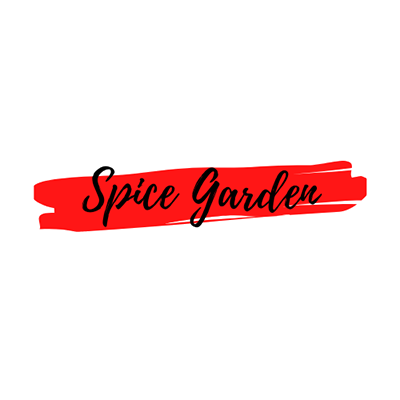

- 
- Home
- Menu
- Reservation
- Delivery
.jpg)
Spice Garden is one of the best Indian Restaurants in Kuala Lumpur and is extremely popular with locals, expatriates and tourists. Enjoy the exotic flavours and subtle tastes of India’s finest cuisines, rooted in the rich heritage of northern India at Spice Garden.
VIEW MENUFragrant, pungent and warm spices from all over India are blended fresh daily in an exacting, centuries old craft indispensable to Indian cuisine. At Spice Garden, only fresh natural ingredients are used to tempt your appetite. The real art lies in the blending of these fresh and natural ingredients of the highest quality, cooked with skill and finesse. The cuisine at Spice Garden boasts its own distinctive flavour and aroma. For the best dining experience, every dish is individually prepared by our team of professional chefs to ensure freshness and with extreme care to ensure you consistency in good quality. Many of our dishes are cooked in a tandoor which is a barrel shaped, open topped clay oven fired by charcoals. We can roast lamb, chicken and fish in this method and even prepare our breads also.
View Menu
Spice Garden chain of restaurants provides delectable authentic Indian and Middle Eastern cuisine in a distinguished and intimate atmosphere. Join us for lunch and dinner for an experience you will want to repeat often…. And re-live a bit of history and enjoy an exciting new gourmet experience. We are a halal restaurant.
Book a TableChef Bharat Batra is an explorer of herbs, spices and molecular gastronomy. He was born with the innate ability to identify the components of a dish purely by taste. Batra leveraged his talent, pursued culinary studies in Switzerland and grown Spice Garden brand into one of Malaysia’s most well known Indian restaurants.
View MenuFeel like a chef? Join our “Cook with Bharat” session to explore the techniques and tricks to make an authentic North Indian Food. Learn the cooking hacks to make simple dishes at home.
Contact Us
Spice Garden has four branches in the Klang Valley and this is a testament to its popularity and excellent food.
Our Locations